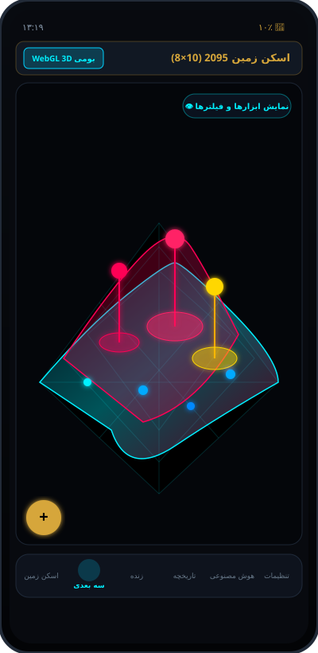

WebGL 3D Native
تصویربرداری و مدلسازی ۳بعدی لایههای زیرزمین
رندرینگ سریع و روان گرافیکی لایههای زمین با امکان چرخش ۳۶۰ درجه، زوم، سنجش پشتهها و پینهای نشاندهنده عمق اهداف.
- شبکه استاندارد ۱۰×۸ و ۱۲×۱۰ نقاط اسکن
- نمایش نقاط آنومالی به صورت برجستگی ۳بعدی
- پینهای هدف حرارتی با خطوط عمقسنجی